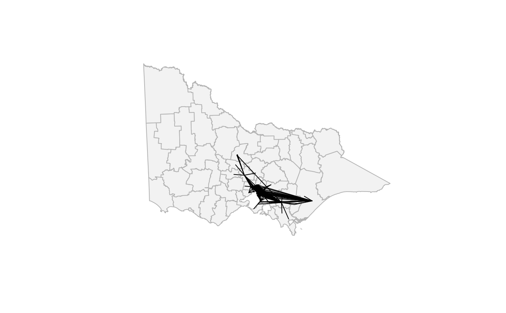

An example LINESTRING layer showing hospital–RACF transfer routes
after applying a Focus–Glue–Context (FGC) fisheye warp.
It demonstrates how line geometries can be spatially distorted in sync
with polygon layers to visualize flow patterns within the magnified focus zone.
Format
An sf object with:
- weight
Numeric, representing transfer magnitude or connection strength.
- geometry
LINESTRINGgeometries in projected CRS (EPSG:3111).
Source
Prepared in data-raw/gen-data.R from
transfers_coded.csv and the make_connections() function.
Details
Built from hospital–RACF coordinate pairs in data-raw/transfers_coded.csv
using:
connection creation via
make_connections()to formLINESTRINGs,projection to VicGrid94 (
EPSG:3111),distance-based filtering to keep only sources within
r_in = 0.34of the focus point (cx = 145.0,cy = -37.8),fisheye transformation using
fisheye_fgc()withr_in = 0.428,r_out = 0.429, andzoom_factor = 1.
The resulting object aligns spatially with vic_fish, allowing
co-visualization of regional flow intensity within the distorted focus region.
Examples
library(sf)
#> Linking to GEOS 3.12.1, GDAL 3.8.4, PROJ 9.4.0; sf_use_s2() is TRUE
plot(st_geometry(vic_fish), col = "grey95", border = "grey70")
plot(st_geometry(conn_fish), add = TRUE, col = "black", lwd = 1)
